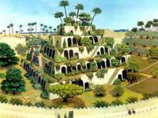
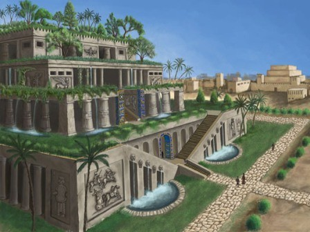
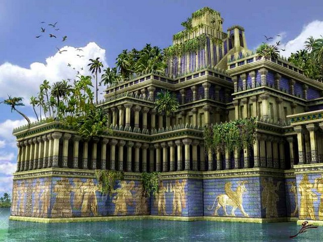
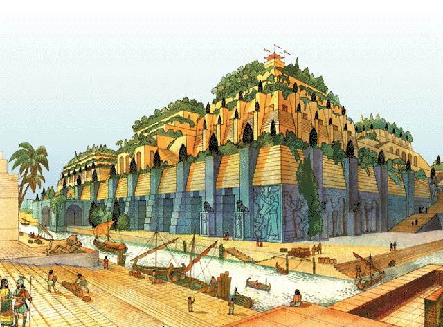
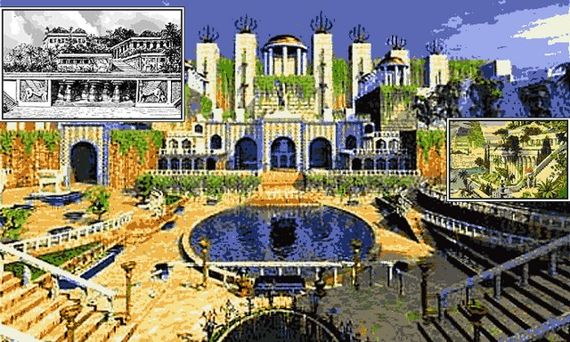
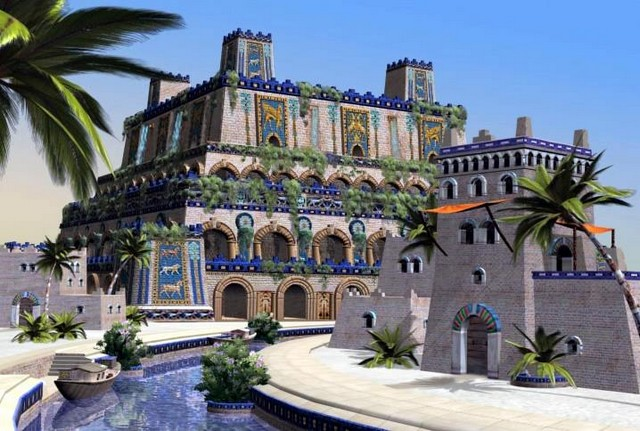

Одне з семи чудес світу античного світу Висячі сади були розташовані в Вавилоні. Їх створення в давнину пов'язували з якоюсь царицею Семирамидой. У теперішній же час вважається, що спорудженням цього чуда технічної думки займався цар Вавилона Навуходоносор II .
Сучасна історія садів Семіраміди пов'язана з ім'ям археолога з Німеччини Роберта Кольдевея. Займаючись розкопками стародавнього Вавилона з 1899 року, в один із днів він натикається на дивну не типова для даної місцевості споруда. Так, наприклад, склепіння мали іншу форму, викладені каменем, замість звичайного цегли, були присутні підземні споруди, а головне, була знайдена цікава система водопостачання з трьох шахт.

Очевидно, що споруда такого типу використовувалася для якихось особливих цілей. Кольдевей залишалося це з'ясувати. Він зміг зрозуміти, що вся споруда являло собою якийсь водопідйомник для безперервної подачі води наверх. Допомога йому зіграли згадки письменників античності, в яких говорилося, що камінь в Вавилоні використовувався лише в двох місцях. Одне з них, біля північної стіни Каср, археологу вдалося виявити раніше. Інша ж місце було напівлегендарним, йшлося про знахідку одного з 7 чудес світу садів Семіраміди.
Основні згадки давнини про сади Семіраміди пов'язані з ім'ям грека Ктесия. Але в силу помічених за ним використанням перебільшень і фантазій, майже всі наші відомості про це чудо світу є спірними і недостовірними.

В античності образ Семіраміди спливає досить часто. Згідно багатьох легенд Семіраміда була хоробрим воїном і будівельником з відмінним архітектурним смаком. За одним із переказів вона була дочкою русалки Атаргатис, що є місячною богинею, і звичайної людини. За іншими переказами Семирамиду з народження залишили батьки, і її вихованням займалися голуби.
Насправді під ім'ям Семіраміди у греків розумілася Ассірії цариця Шаммурамат, що жила приблизно в 800 році до нашої ери. Після смерті чоловіка Шамші-Ад'ада V , їй довелося взяти владу повністю в свої руки, до досягнення повноліття свого сина. Але і після його вступу на царський трон, за Шаммурамат зберігся титул цариці. І не випадково, так при ній було укріплено держава, розширено межі шляхом завоювання Мідії.

Але все ж, чудо світу сади Семіраміди, на думку сучасних дослідників, не могли бути пов'язані з самою Шаммурамат. За більш правдивою версією це диво було подаровано дружині Навуходоносора II Амітіс через двісті років після царювання Семіраміди. За легендою Навуходоносор для війни з Ассирією уклав союз з царем Мідії. Після перемоги для підкріплення союзу він одружився на дочці мідійського царя. Але життя в пустельному Вавилоні була непорівнянна з гористій і повної зелені Мідією. Щоб порадувати і втішити свою дружину Навуходоносор і наказав побудувати ці вічно зелені сади в місті. Так що повна назва цієї споруди, швидше за все, «висячі сади Амітіс».
Вавилонські висячі сади являли собою чотирирівневої споруда з безліччю прохолодних кімнат, рясно прикрашених рослинами. Для їх поливу використовувався водопідйомник, для функціонування якого рабам доводилося крутити колесо. Склепіння будівлі на кожному рівні підпирали 25-метрові колони. Тераси викладалися плиткою, заливалися асфальтом і засипалися шаром землі, достатнім для вирощування навіть дерев.

Використовувана в садах Семіраміди система водопостачання не була новинкою для Месопотамії. Подібне зустрічається і в місцевих зіккурати, включаючи легендарну Вавілонську вежу і Великий зиккурат в Урі . Але саме в садах техніка зрошення досягла своєї досконалості.
Якщо говорити про царювання Навуходоносора II , то це було часом великих змін будівництва великих споруд. За час його правління були побудовані безліч доріг міста, включаючи знамениту Дорогу процесій, що веде від воріт богині Іштар , величезна кількість палаців і храмів.

Окремо варто згадати про легендарні стіни Вавилона , спочатку віднесені також до списку чудес світу. Якщо вірити описам, то їх ширина дозволяла вільно роз'їхатися двом колісницям. У двох рядах стін кожні 50 метрів встановлювалися сторожові вежі. Всього на внутрішній стіні їх було 360, а на зовнішній 250.
Але зі зведенням Олександрійського маяка стіни міста з садами Семіраміди покинули знаменитий список, а ось самі сади з гордістю дійшли з ним і до наших часів. Звичайно, можна довго сперечатися місце садів в цьому переліку, але те, що це було одне з кращих інженерних споруд давнини не викликає сумніву.